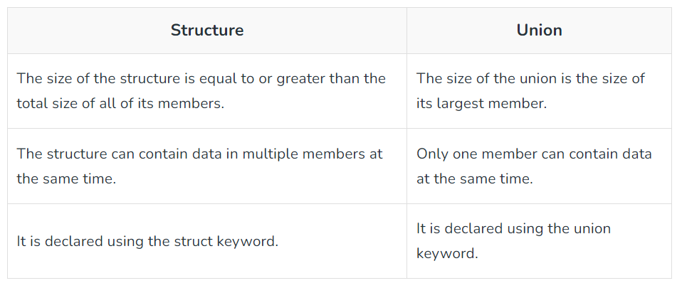

C++ Structure And Union
Structures are usually used when we wish to store data of different data types together. For example, if we want to store information about a book, there could be a number of parameters defining a book. Books have a title, an author name, the number of pages, and a price. All of the book attributes belong to different data types. The titles and author names must be strings, but the prices and number of pages must be numerical.
One way to store the data is to construct individual arrays, and another method is to use a structure variable. It is to keep in mind that structure elements are always stored in contiguous memory locations.
struct structure_name
{
//structure_elements
} structure_variable;
{
//structure_elements
} structure_variable;
Ex:struct Books
{
char title[20];
char author[100];
float price;
int pages;
};
{
char title[20];
char author[100];
float price;
int pages;
};
Where are Structs useful?
Structures are used to store a large amount of data of varying data types. They are used to send data to the printer. For placing the cursor at an appropriate position on the screen, we can use structure. It can be used in drawing and floppy formatting. We use structures in finding out the list of equipment attached to the computer.
What are Unions in C++?
The Union is a user-defined data type in C++ language that can contain elements of the different data types just like structure. But unlike structures, all the members in the C++ union are stored in the same memory location. Due to this, only one member can store data at the given instance.
Union Declaration:
union union_name {
datatype member1;
datatype member2;
...
};
Keep in mind that we have to always end the union declaration with a semi-colon.
datatype member1;
datatype member2;
...
};
Different Ways to Define a Union Variable:
- With Union Declaration
- After Union Declaration
1.Defining Union Variable with Declaration:
union union_name {
datatype member1;
datatype member2;
...
}
var1, var2, ...;
datatype member1;
datatype member2;
...
}
var1, var2, ...;
2.Defining Union Variable after Declaration:
union union_name var1, var2, var3...;
where union_name is the name of an already declared union.
Access Union Members:We can access the members of a union by using the ( . ) dot operator just like structures.
var1.member1;
where var1 is the union variable and member1 is the member of the union.
The above method of accessing the members of the union also works for the nested unions.
var1.member1.memberA;
Here:var1 is a union variable. member1 is a member of the union. memberA is a member of member1.
Initialization of Union in C++
var1.member1 = some_value;
Difference between Structure and Union?
What are the applications of unions?
Unions can be useful in many situations where we want to use the same memory for two or more members. For example, suppose we want to implement a binary tree data structure where each leaf node has a double data value, while each internal node has pointers to two children, but no data. If we declare this as:
struct NODE {
struct NODE* left;
struct NODE* right;
double data;
};
struct NODE* left;
struct NODE* right;
double data;
};
then every node requires 16 bytes, with half the bytes wasted for each type of node. On the other hand, if we declare a node as the following, then we can save space
struct NODE {
bool is_leaf;
union {
struct {
struct NODE* left;
struct NODE* right;
} internal;
double data;
} info;
};
Next »
« Previous
bool is_leaf;
union {
struct {
struct NODE* left;
struct NODE* right;
} internal;
double data;
} info;
};